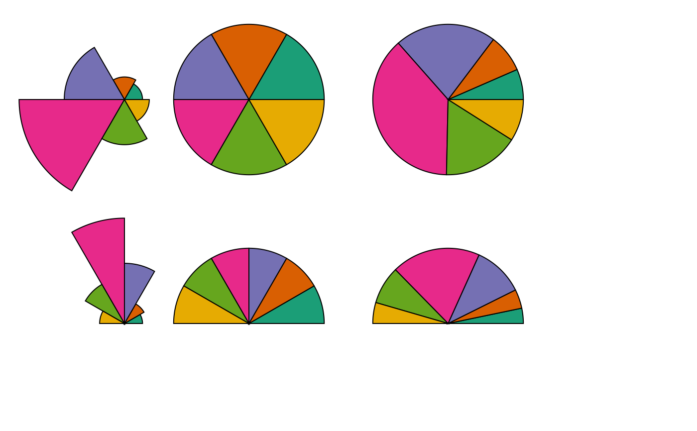
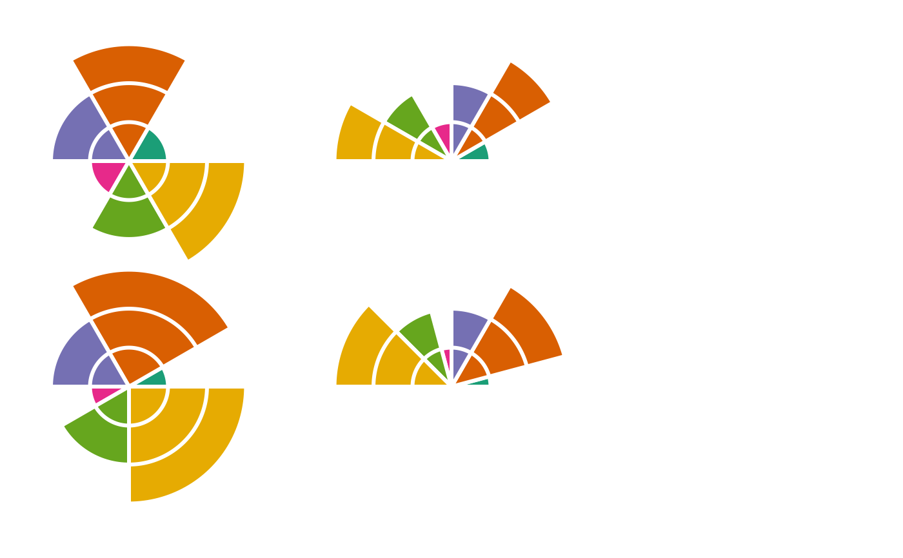

Uses Grid graphics to draw a circular pie or clock glyph
(Ward and Lipchak 2000; Fuchs et al. 2013)
.
Usage
pieglyphGrob(
x = 0.5,
y = 0.5,
z,
size = 1,
edges = 200,
col = "black",
fill = NA,
lwd = 1,
alpha = 1,
angle.start = 0,
angle.stop = 2 * base::pi,
linejoin = c("mitre", "round", "bevel"),
scale.segment = FALSE,
scale.radius = TRUE,
grid.levels = NULL,
draw.grid = FALSE,
col.grid = "grey",
lwd.grid = lwd
)Arguments
- x
A numeric vector or unit object specifying x-locations.
- y
A numeric vector or unit object specifying y-locations.
- z
A numeric vector specifying the values to be plotted as dimensions of the pie glyph according to the arguments
scale.segmentorscale.radius.- size
The size of glyphs (radius).
- edges
The number of edges of the polygon to depict the circular glyph outline.
- col
The line colour.
- fill
The fill colour.
- lwd
The line width.
- alpha
The alpha transparency value.
- angle.start
The start angle for the glyph in radians. Default is zero.
- angle.stop
The stop angle for the glyph in radians. Default is \(2\pi\).
- linejoin
The line join style for the pie segment polygons. Either
"mitre","round"or"bevel".- scale.segment
logical. If
TRUE, the segments (pie slices) are scaled according to value ofz.- scale.radius
logical. If
TRUE, the radius of segments (pie slices) are scaled according to value ofz.- grid.levels
A list of grid levels (as vectors) corresponding to the values in
zat which grid lines are to be plotted. The values inzshould be present in the list specified.- draw.grid
logical. If
TRUE, grid lines are plotted along the segments whenscale.radius = TRUE. Default isFALSE.- col.grid
The colour of the grid lines.
- lwd.grid
The line width of the grid lines.
Value
A gTree object.
References
Fuchs J, Fischer F, Mansmann F, Bertini E, Isenberg P (2013).
“Evaluation of alternative glyph designs for time series data in a small multiple setting.”
In Proceedings of the SIGCHI Conference on Human Factors in Computing Systems, 3237--3246.
ISBN 978-1-4503-1899-0.
Ward MO, Lipchak BN (2000).
“A visualization tool for exploratory analysis of cyclic multivariate data.”
Metrika, 51(1), 27--37.
See also
Other grobs:
dotglyphGrob(),
metroglyphGrob(),
profileglyphGrob(),
starglyphGrob(),
tileglyphGrob()
Examples
p1 <- pieglyphGrob(x = 250, y = 200,
z = c(0.24, 0.3, 0.8, 1.4, 0.6, 0.33),
size = 20)
p2 <- pieglyphGrob(x = 500, y = 200,
z = c(0.24, 0.3, 0.8, 1.4, 0.6, 0.33),
size = 20, scale.radius = FALSE)
p3 <- pieglyphGrob(x = 900, y = 200,
z = c(0.24, 0.3, 0.8, 1.4, 0.6, 0.33),
size = 20, scale.segment = TRUE, scale.radius = FALSE)
p4 <- pieglyphGrob(x = 250, y = 650,
z = c(0.24, 0.3, 0.8, 1.4, 0.6, 0.33),
size = 20, angle.start = 0, angle.stop = base::pi)
p5 <- pieglyphGrob(x = 500, y = 650,
z = c(0.24, 0.3, 0.8, 1.4, 0.6, 0.33),
size = 20, scale.radius = FALSE,
angle.start = 0, angle.stop = base::pi)
p6 <- pieglyphGrob(x = 900, y = 650,
z = c(0.24, 0.3, 0.8, 1.4, 0.6, 0.33),
size = 20, scale.segment = TRUE, scale.radius = FALSE,
angle.start = 0, angle.stop = base::pi)
grid::grid.newpage()
grid::grid.draw(p1)
grid::grid.draw(p2)
grid::grid.draw(p3)
grid::grid.draw(p4)
grid::grid.draw(p5)
grid::grid.draw(p6)
p1 <- pieglyphGrob(x = 250, y = 200,
z = c(0.24, 0.3, 0.8, 1.4, 0.6, 0.33),
size = 20, fill = RColorBrewer::brewer.pal(6, "Dark2"))
p2 <- pieglyphGrob(x = 500, y = 200,
z = c(0.24, 0.3, 0.8, 1.4, 0.6, 0.33),
size = 20, scale.radius = FALSE,
fill = RColorBrewer::brewer.pal(6, "Dark2"))
p3 <- pieglyphGrob(x = 900, y = 200,
z = c(0.24, 0.3, 0.8, 1.4, 0.6, 0.33),
size = 20, scale.segment = TRUE, scale.radius = FALSE,
fill = RColorBrewer::brewer.pal(6, "Dark2"))
p4 <- pieglyphGrob(x = 250, y = 650,
z = c(0.24, 0.3, 0.8, 1.4, 0.6, 0.33),
size = 20, angle.start = 0, angle.stop = base::pi,
fill = RColorBrewer::brewer.pal(6, "Dark2"))
p5 <- pieglyphGrob(x = 500, y = 650,
z = c(0.24, 0.3, 0.8, 1.4, 0.6, 0.33),
size = 20, scale.radius = FALSE,
angle.start = 0, angle.stop = base::pi,
fill = RColorBrewer::brewer.pal(6, "Dark2"))
p6 <- pieglyphGrob(x = 900, y = 650,
z = c(0.24, 0.3, 0.8, 1.4, 0.6, 0.33),
size = 20, scale.segment = TRUE, scale.radius = FALSE,
angle.start = 0, angle.stop = base::pi,
fill = RColorBrewer::brewer.pal(6, "Dark2"))
grid::grid.newpage()
grid::grid.draw(p1)
grid::grid.draw(p2)
grid::grid.draw(p3)
grid::grid.draw(p4)
grid::grid.draw(p5)
grid::grid.draw(p6)

p1 <- pieglyphGrob(x = 300, y = 250,
z = c(0.24, 0.3, 0.8, 1.4, 0.6, 0.33),
size = 20, lwd = 5)
p2 <- pieglyphGrob(x = 500, y = 450,
z = c(0.24, 0.3, 0.8, 1.4, 0.6, 0.33),
size = 20, lwd = 5, linejoin = "round")
p3 <- pieglyphGrob(x = 700, y = 650,
z = c(0.24, 0.3, 0.8, 1.4, 0.6, 0.33),
size = 20, lwd = 5, linejoin = "bevel")
grid::grid.newpage()
grid::grid.draw(p1)
grid::grid.draw(p2)
grid::grid.draw(p3)
dims = c(1, 3, 2, 1, 2, 3)
gl <- split(x = rep(c(1, 2, 3), 6),
f = rep(1:6, each = 3))
p1 <- pieglyphGrob(x = 200, y = 250,
z = dims, size = 8,
draw.grid = TRUE, grid.levels = gl,
lwd = 2, col.grid = "black")
p2 <- pieglyphGrob(x = 700, y = 250,
angle.start = 0, angle.stop = base::pi,
z = dims, size = 8,
draw.grid = TRUE, grid.levels = gl,
lwd = 2, col.grid = "black")
p3 <- pieglyphGrob(x = 200, y = 600,
z = dims, size = 8, scale.segment = TRUE,
draw.grid = TRUE, grid.levels = gl,
lwd = 2, col.grid = "black")
p4 <- pieglyphGrob(x = 700, y = 600,
angle.start = 0, angle.stop = base::pi,
z = dims, size = 8, scale.segment = TRUE,
draw.grid = TRUE, grid.levels = gl,
lwd = 2, col.grid = "black")
grid::grid.newpage()
grid::grid.draw(p1)
grid::grid.draw(p2)
grid::grid.draw(p3)
grid::grid.draw(p4)
dims = c(1, 3, 2, 1, 2, 3)
gl <- split(x = rep(c(1, 2, 3), 6),
f = rep(1:6, each = 3))
p1 <- pieglyphGrob(x = 200, y = 250,
z = dims, size = 8, col = "white",
draw.grid = TRUE, grid.levels = gl,
lwd = 3, col.grid = "white",
fill = RColorBrewer::brewer.pal(6, "Dark2"))
p2 <- pieglyphGrob(x = 700, y = 250,
angle.start = 0, angle.stop = base::pi,
z = dims, size = 8, col = "white",
draw.grid = TRUE, grid.levels = gl,
lwd = 3, col.grid = "white",
fill = RColorBrewer::brewer.pal(6, "Dark2"))
p3 <- pieglyphGrob(x = 200, y = 600,
z = dims, size = 8,
col = "white", scale.segment = TRUE,
draw.grid = TRUE, grid.levels = gl,
lwd = 3, col.grid = "white",
fill = RColorBrewer::brewer.pal(6, "Dark2"))
p4 <- pieglyphGrob(x = 700, y = 600,
angle.start = 0, angle.stop = base::pi,
z = dims, size = 8,
col = "white", scale.segment = TRUE,
draw.grid = TRUE, grid.levels = gl,
lwd = 3, col.grid = "white",
fill = RColorBrewer::brewer.pal(6, "Dark2"))
grid::grid.newpage()
grid::grid.draw(p1)
grid::grid.draw(p2)
grid::grid.draw(p3)
grid::grid.draw(p4)
